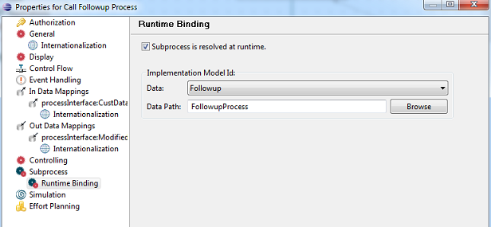
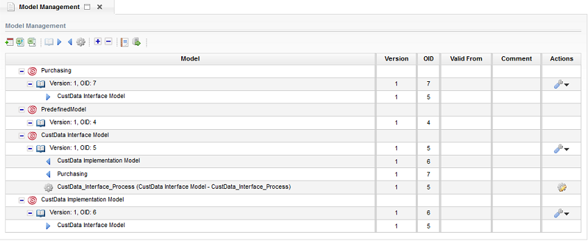

Sometimes a need arises where a certain process needs to be implemented differently depending on certain process data. For example, a regulatory process for a company based in the US might require certain Sarbanes-Oxley ("SOX") compliance activities while a company listed elsewhere might have to comply with other local laws. Stardust provides the ability to support such scenarios by defining process interfaces that can have multiple implementations. The implementation chosen at runtime can be bound to certain process data and can thus be dynamically selected. The example models referred to in this chapter can be downloaded from the following link as a ZIP file:
You find the models in folder process-interface-impl.
The example explained here is a fictional product purchase process. You find all example models as well as a Customer_Data.xsd file in the zip file mentioned above. Please note that you need to add the xsd file to your classpath as it provides the structured type Customer_Data used in the example models.
Please see the example process from model ProductPurchaseModel.xpdl in the screenshot below. The process begins by accepting certain customer information. The user is then prompted to select the follow-up process. The follow-up process is an example of a Process Interface. This interface is defined in its own model (CustDataInterfaceModel.xpdl), which also provides a default implementation (see screenshot below). A reference to this interface is made in the Product Purchase Process. This interface defines a single INOUT parameter of type Customer_Data and an instance of this structured data type (CustData). The Product Purchase process imports this data and binds it to the formal process interface parameter to exchange data with the process interface implementation (CallFollowup Process activity) at runtime.
Figure: Product Purchase Process
Figure: CustData_Interface_Process Interface and Formal Parameter
definition
While the process interface defines a default implementation it is intended that the process designer provides his own implementations that meet the actual business need. In our example we provide two implementations for the follow-up process (CustDataImplementationModel.xpdl).
Figure: Two Implementations of CustData_Interface_Process
The two implementations (CustData_Escalation_Process and CustData_Shipping_Process) are both defined to implement CustData_Interface_Process.
Figure: Implementation Process Properties
Thus, it is expected that both these implementations will consume and return a structured data of type Customer_Data. As discussed earlier these are precisely the values that are passed to these processes from the Product Purchase process. We now return to the Product Purchase process to discuss the process of runtime binding to a process interface implementation. As shown in the product purchase process above, the set of possible actions that can be selected by the user is picked from the data Followup. As shown in the screenshot below, this data is a reference to the Followup structured data type which consist of two parts - ActionSelected (an enumeration of type Followup_Actions) and FollowupProcess (a string).
Figure: Definition of the Data FollowUp
Now the options Ship or Escalate are presented as follow-up actions. The subsequent activity Determine Followup Process is responsible for converting these values into appropriate Process Implementation names. Note that the Stardust convention {ModelId}{ProcessId} is used to uniquely identify the process.
Figure: Converting Follow-up action into Process Implementation
name
Finally, we define a sub process activity that dynamically invokes the process implementation determined earlier. We declare that the sub process is resolved at runtime and pass in the process data (Followup/FollowupProcess) that identifies the Process Id of the desired implementation.

Figure: Runtime binding of Process Implementation
We first deploy the interface, implementation and consumer models. The Model Management view appears as shown below.

Figure: Deploying the interface, implementation and consumer models
Next, we kick off the Product Purchase process and enter some customer data. We do no enter any value for the Final Outcome field since it is populated by the runtime process implementation selected and displayed as the modified customer data in the final step of the Product Purchase process.
Figure: Enter Customer Details activity
In the next step, we select the follow-up action (in this case Escalate). The Followup Process field is left blank since it is populated in the subsequent message transformation application (see section Converting Follow-up Actions).
Figure: Select Followup Action activity
In the final step, the Display Final CustData activity, displays the modified customer data. The Final Outcome field is populated with a value that depends on the Process Implementation selected at runtime. In this particular case the value Escalated is displayed since we chose the Escalate action in an earlier step (see section ).
Figure: Display Final CustData
The Process History view displays the sequence of activities executed during the process run. It also indicates that the CustData_Escalation_Process was selected at runtime. This agrees with the input provided earlier and validates that our processes have been designed correctly. We can run the process once more and choose the other follow-up action, this time Ship, to test that the CustData_Shipping_Process is executed for this value.
Figure: Process History and display of runtime Process
Implementation information